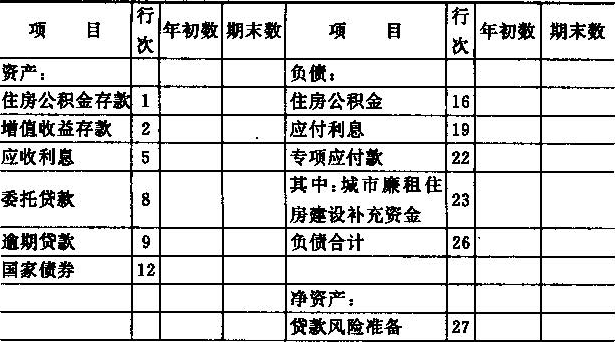

财政部
关于印发《住房公积金会计核算办法》的通知
财会字〔1999〕33号
各省、自治区、直辖市、计划单列市财政厅（局）：
为了规范和加强住房公积金的会计核算，维护住房公积金所有者的合法权益，根据《中华人民共和国会计法》、《住房公积金管理条例》、《住房公积金财务管理办法》，我们制定了《住房公积金会计核算办法》，现印给你们，请转发所属住房公积金管理中心，自2000年1月1日起执行。执行中有何问题，请及时函告我部。
附件：住房公积金会计核算办法
财政部
1999年10月14日
附件：
住房公积金会计核算办法
第一章 总则
一、为了规范和加强住房公积金的会计核算，维护住房公积金所有者的合法权益，特制定本办法。
二、本办法适用于中华人民共和国境地内住房公积金管理中心（以下简称“住房公积金中心”）管理的住房公积金。
住房公积金中心的自身业务应与住房公积金业务分帐核算，住房公积金中心自身业务的会计核算，执行《事业单位会计制度》。
三、住房公积金的会计核算应当正确划分会计期间，分期结算帐目和编制会计报表。会计年度自公历1月1日起至12月31日止，年度、季度的起讫日期采用公历日期。
四、住房公积的会计记账采用借贷记帐法。
五、住房公积金的会计处理方法前后期应当一致，会计指标应当口径一致、不得随意变更。如确有必要变更，应当将变更的情况、变更的原因，在财务情况说明书中加以说明。
六、住房公积金中心应按以下规定运用住房公积金会计科目：
（一）本办法统一规定会计科目的编号，以便于编制会计凭证，登记账簿，查阅账目，实行会计电算化，各住房公积金中心不得随意改变或打乱重编。在某些会计科目之间留有空号，供增设会计科目之用。
（二）住房公积金中心在填制住房公积金的会计凭证、登记帐簿时，应填列会计科目的名称，或同时填列会计科目的名称和编号；不应只填列会计科目编号，不填列会计科目名称。
七、住房公积金中心应当按照本办法的规定编制和提供公积金财务会计报告：
（一）住房公积金中心应当按照本办法的规定编制和提供合法、真实和公允的住房公积金财务会计报告。
（二）住房公积金财务会计报告由会计报表、会计报表附注和财务情况说明书组成。住房公积金中心对外提供的住房公积金财务会计报告的内容、会计报表种类和格式等，由本办法规定；住房公积金中心对住房公积金进行内部管理需要的会计报表由住房公积金中心自行规定。
（三）住房公积金中心对外提供的住房公积金会计报表包括：
1.资产负债表；
2.增值收益表；
3.有关附表。
（四）住房公积金会计报表必须做到数字真实、内容清楚、手续齐备、编报及时；并报送同级财政部门和住房委员会。
季度会计报表应于季度了后10日内报出，年度会计报表应于季度终了后30日后报出。
（五）住房公积金会计报表的填列，以人民币“元”为金额单位，“元”以下填至“分”。
（六）对外报出的会计报表应依次编定页数，加具封面，装订成册，加盖公章。封面应注明住房公积金中心名称、报表所属年度、月份、送出日期等，并由住房公积金中心负责人和主管会计工作的负责人、会计机构负责人（会计主管人员）签名和盖章；设置总计师的单位，还须由总会计师签名和盖章。
八、住房公积金会计机构的设置、会计人员配备、会计核算，会计监督、内部会计管理制度的要求，按照《会计基础工作规范》的规定执行。
九、本办法由中华人民共和国财政部负责解释，需要变更时，由财政部修订。
十、本办法自2000年1月1日起施行。
第二章 会计科目及使用说明
一、会计科目表
二、会计科目使用说明
第101号科目 住房公积金存款
（一）本科目核算按规定存入受委托银行住房公积金专户的款项。
（二）将款项存入受委托银行住房公积金专户，借记本科目，贷记有关科目，提取和支付住房公积金专户的款项借户关科目，贷记本科目。
（三）本科目应设置“住房公积金存款日记帐”由出纳入人员根据收付款凭证按照业务的发生顺序逐笔登记，每日终了应结出余额。“住房公积金存款日记帐”应定期与“银行对帐单”核对，至少每月核对一次。月份终了，银行存款帐面结余与银行对帐单余额之间如有差额，必须逐笔查明原因进行处理，并应按月编制“住房公积金存款余额调节表”，调节相符。
（四）本科目期末借方余额，反映实际存在受委托银行住房公积金专户的款项。
第102号科目 增值收益存款
（一）本科目核算按规定存入受委托银行增值收益专户的款项。
（二）收到银行转来的公积金增值收益专户利息收入，借记本科目，贷记“业务收入——增值收益利息收入”科目。
实际上交财政部门的住房公积金中心管理费用、城市廉租住房建设补充资金，借记“：专项应付款”科目，贷记本科目。
（三）期末（季末或年末、下同），按规定将除住房公积金增值收益专户利息收入之外的各项业务收入与业务支出的差额，自银行住房公积金专户转入增值收益专户，借记本科目，贷记“住房公积金存款”科目。
（四）本科目应设置“增值收益存款日记账”，由出纳人员根据收付款凭证，按照业务的发生顺序逐笔登记，每日终了应结出余额。“增值收益存款日记账”应定期与“银行对账单”核对，至少每月核对一次，月份终了，银行存款账面结余与银行对帐单余额之间如有差额，必须逐笔查明原因进行处理，并应按月编制“增值收益存款余额调节表”，调节相符。
（五）本科目期末借方余额，反映实际存在受委托银行增值收益专户的款项。
第111号科目 应收利息
（一）本科目核算住房公积金运作过程中发生的各项应收未收的利息，如委托贷款发生的应收利息。
（二）期末，计算当期尚未收到的委托贷款利息，借记本科目，贷记“业务收入——委托贷款利息收入”科目；实际收回利息时，借记“住房公积金存款”科目，贷记本科目。
按规定程序经批准核销的住房公积金呆账贷款，冲销提取的贷款风险准备，借记“贷款风险准备”科目，贷记本科目和“逾期贷款”科目，同时，借记“住房公积金存款”科目，贷记“增值收益存款”科目；核销的贷款以后又收回，按收回的住房公积金本金和利息，借记“住房公积金存款”科目，贷记“贷款风险准备”科目，同时，借记“增值收益存款”科目，贷记“住房公积金存款”科目。
（三）本科目应按债务人设置细账。
（四）本科目期末借方余额，反映尚未收回的利息。
第121号科目 委托贷款
（一）本科目核算按规定在受委托银行办理职工住房公积金委托贷款的款项。
已超过借款合同约定期限尚未归还委托贷款，不在本科目核算，应在“逾期贷款”科目核算。
（二）本科目核算内容如下：
1.按规定向购买、建造、大修自住住房的职工发放住房公积金贷款，借记本科目，贷记“住房公积金存款”科目；收回住房公积金贷款，按本息合计，借记“住房公积金存款”科目，按本金，贷记本科目，按已计利息，贷记“应付利息”科目，按未计利息，贷记“业务收入——委托贷款利息收入”科目。
2.对于借款合同约定到期（含展期后到期）未归还的委托贷款，应转作逾期贷款处理，自本科目转入“逾期贷款”科目，借记“逾期贷款”科目，贷记本科目。
3.对借款人申请住房公积金贷款而提供的担保，应建立备查簿，详细登记担保的形式（抵押、质押等形式）、担保金额等情况。
（三）本科目按贷款职工名称设置明细账。
（四）本科目期末借方余额，反映实际发生的、在借款合同约定期限内尚未归还的住房公积金委托贷款。
第122号科目 逾期贷款
（一）本科目核算合同约定到期（含展期后到期）未归还的委托贷款。
（二）对于借款合同约定到期（含展期后到期）未归还的委托贷款，应转作逾期贷款处理，自“委托贷款”科目转入本科目，借记科目，贷记“委托贷款”科目。收回逾期贷款，借记“住房公积金存款”科目，贷记本科目和“应收利息”科目。
按规定程序经批准核销的住房公积金呆账贷款，冲销提取的贷款风险准备，借记“贷款风险准备”科目，贷记本科目和“应收利息”科目，同时，借记“住房公积金存款”科目，贷记“增值收益存款”科目；核销的贷款以后又收回，按收回的住房公积金贷款本金和利息，借记“住房公积金存款”科目，贷记“贷款风险准备”科目，同时，借记“增值收益存款”科目，贷记“住房公积金存款”科目。
（三）本科目应按贷款职工名称设置明细账。
（四）本科目期末借方余额，反映已超过借款合同约定期限但尚未归还的住房公积金贷款。
第124号科目 国家债券
（一）本科目核算按规定用住房公积金购买的国家债券。
（二）按规定用住房公积金购买国家债券，按实际支付的价款，借记本科目，贷记“住房公积金存款”科目。
国家债券到期收回本息或按规定转让时，按实际收到的金额，借记“住房公积金存款”科目，按债券账面价值，贷记本科目，按期差额，贷记“业务收入——国家债券利息收入”科目。
购买的国家债券应视同货币资金妥善保管，并建立备查簿详细登记国家债券的金额、期限、利率、到期收回等情况。
（三）本科目应按国家债券的品种设置明细账。
（四）本科目期未借方余额，反映持有的国家债券价值。
第201号科目 住房公积金
（一）本科目核算住房公积金的归集、结息和支付等情况。
（二）本科目的贷方核算住房公积金的归集和结息情况，其核算内容如下：
1.收到单位和职工个人缴存的住房公积金，借记“住房公积金存款科目”科目，贷记本科目。
2.按规定给职工住房公积金账户进行年度结息，按已提利息，借记“应付利息”科目，按未提利息，借记“业务支出——住房公积金利息支出”科目，按应计利息，贷记本科目。
3.职工在住房公积金中心管辖范围内调动工作，在本科目有关明细科目之间进行转帐，借记本科目（调出单位），贷记本科目（调入单位）。
（三）本科目的借方核算职工住房公积金账户内存储余额的提取情况，其核算内容如下：
1.职工因购买、建造、翻建、大修自住住房非凡提取职工住房公积金账户内的存储余额，借记本科目，贷记“住房公积金存款”科目。
2.职工因偿还购房贷款本息、房租超出家庭工资收入的规定比例而提取职工住房公积金账户内的存储余额，借记本科目，贷记“住房公积金存款”科目。
3.职工因离退休、完全丧失劳动能力并与单位终止劳动关系、户口迁出所在的市县或者出境定居等原因而提取职工住房公积金账户内的储存余额，根据委托银行转来的住房公积金支款凭证办理注销职工住房公积金账户，按职工个人账户结余数额，借记本科目，按已提利息，借记“应付利息”科目，按未提利息，借记“业务支出——住房公积金支出”科目，按实际支付金额，贷记“住房公积金存款”科目。
4.死亡或者被宣告死亡的职工，其继承人、受遗赠人提取职工住房公积金账户内的存储余额，按职工个人账户结余数额，借记本科目，按已提利息，借记“应付利息”科目，按未提利息，借记“利息支出”科目，按实际支付金额，贷记“住房公积金存款”科目，死亡或者被宣告死亡的职工，无继承人也无受遗赠人的，应将职工住房公积金账户内的存储余额转入业务收入，借记本科目，贷记“业务收入——其他收入”科目。
（四）本科目有关辅助账户的设置：
1.为了分析、掌握住房公积金的欠缴情况，住房公积金中心可设置“住房公积金应缴存额”备查簿，详细登记应缴存住房公积金的有关情况。
2.为了了解、掌握职工住房公积金账户内存储余额的提取情况，住房如心可设置“住房公积金账户提取情况”备查簿，详细登记因职工购买、建造、翻建、大修自住住房；离退休；完全丧失劳动能力，并与单位终止劳动关系；户口迁出所在的市、县或者出境定居；偿还购房贷款本息；房租超出家庭工资收入的规定比例等原因而提以职工住房公积金户内存储余额的情况。
（五）住房公积金中心应向缴存单位及时提供单位住房公积金的存储余额，按期与缴存单位核对住房公积金账户的余额。
（六）本科目应按缴存单位和职工个人设置明细账。
（七）本科目期要贷方余额，反映职工住房公积金账户存款余额。
第211号科目 应付利息
（一）本科目核算住房公积金动作过程中发生的应付未付的利息，如计提的职工住房公积金账户利息。
（二）期末计提职工住房公积金账户利息时，借记“业务支出——住房公积金利息支出”科目，贷记本科目；按规定给职工公积金账户进行年度 结息时，按已提利息，借记本科目，按应计利息扣除已提利息的差额，借记“业务支出——住房公积金利息支出”科目，按应计利息，贷记“住房公积金”科目。
（三）本科目期末贷方余额，反映应付未付的利息。
第214号科目 专项应付款
（一）本科目核算应交财政部门的住房公积金中心管理费用和城市廉租住房建设补充资金。
（二）本科目应设置以下两个明细科目：
1.住房公积金中心管理费用；
2.城市廉租住房建设补充资金。
（三）按规定从住房公积金增值收益中提取的住房公积金管理费用，借记“增值收益分配——提取公积金中心管理费用”科目，贷记本科目；住房公积金增值收益在扣除贷款风险准备金和公积金中心管理费用后的余额，作为城市廉租住房建设补充资金，借记“增值收益分配——城市廉租住房建设补充资金”科目，贷记本科目。实际上交财政部门的住房公积金中心管理费用、城市廉租住房建设补充资金，借记本科目，贷记“增值收益存款”科目。
（四）本科目期未贷方余额，反映尚未上交财政部门的住房公积金中心管理费用、城市廉租住房建设补充资金。
第301号科目 贷款风险准备
（一）本科目核算按规定提取的住房公积金贷款风险准备。
（二）对于委托贷款，应于年度终了按规定提取住房公积金贷款风险准备，提取贷款风险准备时，借记“增值收益分配——提取贷款风险准备”科目，贷记本科目。
对于不能收回的逾期贷款应查明原因，追究责任。对确实无法收回的，按规定程序经批准作为呆账代款，冲销提取的贷款风险准备，借记本科目，贷记“逾期贷款”、“应收利息”科目，同时，借记“住房公积金存款”科目，贷记“增值收益存款”科目；已确认并转销的呆账贷款，如果以后又收回，按实际收回的本金和利息，借记“住房公积金存款”科目，贷记本科目，同时，借记“增值收益存款”科目，贷记“住房公积金存款”科目。
（三）本科目期未贷方余额，反映已提取的住房公积金贷款风险准备。
第311号科目 增值收益
（一）本科目核算住房公积金各项收入与各项支出的差额，即实现的住房公积金增值收益。
（二）期末，结转下列业务收支科目：
1.将“业务收入”科目贷方余额转入本科目，借记“业务收入”科目，贷记本科目。
2.将“业务支出”科目借方余额转入本科目，借记本科目，贷记“业务支出”科目。
3.同时，将各项业务收入与业务支出的差额，自银行住房公积金专户转入增值收益专户，借记“增值收益存款”科目，贷记“住房公积金存款”科目。
（三）年度终了，应将本科目贷方余额转入“增值收益分配”科目，借记本科目，贷记“增值收益分配——待分配增值收益”科目；如为借方余额作相反会计分录。结转后本科目应无余额。
第321号科目 增值收益分配
（一）本科目核算住房公积金增值收益的分配情况。
（二）本科目应设置以下四下明细科目：
1.提取贷款风险准备；
2.提取公积金中心管理费用；
3.城市廉租住房建设补充资金；
4.待分配增值收益。
（三）年度终了，帐务处理如下：
1.将“增值收益”科目贷方余额转入本科目，借记“增值收益”科目，贷记本科目（待分配增值收益），“增值收益”科目如为介方余额，作相反会计分录。
2.增值收益应按上列顺序进行分配：
（1）按规定从增值收益中提取住房公积金贷款风险准备，借记本科目（提取贷款风险准备），贷记“贷款风险准备”科目。
（2）按规定从增值收益中提取应上交财政部门的住房公积金中心管理费用，借记本科目（提取公积金中心管理费用），贷记“专项应付款”科目。
（3）增值收益扣除贷款风险准备和上交财政部门管理费用后的余额，作为城市廉租住房建设补充资金“明细科目的余额转入本科目所属“待分配增值收益”明细科目，借记本科目（待分配增值收益），贷记本科目（提取贷款风险准备、提取公积金中心管理费用、城市廉租住房建设补充资金）。
（四）本科目年末一般无余额，如有借方余额，反映未弥补的损失。
第401号科目 业务收入
（一）本科目核算住房公积金业务收入。
（二）本科目应设置以下五个明细科目：
1.住房公积金利息收入；
2.增值收益利息收入；
3.委托贷款利息收入；
4.国家债券利息收入；
5.其他收入。
（三）住房公积金动作过程中实现的各项业务收入，作如下账务处理：
1.收到委托银行转来的住房公积金专户存款利息收入，借记“住房公积金存款”科目，贷记本科目（住房公积金利息收入）。
2.收到银行转来的住房公积金增值收益专户存款利息收入，借记“增值收益存款”科目，贷记本科目（增值收益利息收入）。
3.期末计算当期应收未收的委托贷款利息，借记“应收利息”科目，贷记本科目（委托贷款利息收入）。收回住房公积金委托贷款，按本息合计，借记“住房公积金存款”科目，按本金、贷记“委托贷款”科目，按已计利息，贷记“应收利息”科目，按未计利息，贷记本科目（委托贷款利息收入）。
4.国家债券到期收回或按规定转让时，按实际收到的金额，借记“住房公积金存款”科目，按债券账面价值，贷记“国家债券”科目，按其差额，贷记本科目（国家债券利息收入）。
5.收到住房公积金逾期贷款的罚息收入、以及逾期不办理住房公积金的罚款收入，借记“住房公积金存款”科目，贷记本科目（其他收入）。死亡或者被宣告死亡的职工，无继承人也无受遗赠人的，应将职工住房公积金账户内的存储余额转入本科目，借记“住房公积金”科目，贷记本科目（其他收入）。
（四）期末，应将本科目余额全部转入“增值收益”科目，借记本科目，贷记“增值收益”科目，结转后本科目应无余额。
第411号科目 业务支出
（一）本科目核算住房公积金的业务支出，包括按国家规定给职工住房公积金账户计算的利息、住房公积金中心按照规定支付给受委托银行的住房公积金归集手续费和委托贷款手续费。
（二）本科目应设置以下三个明细科目：
1.住房公积金利息支出；
2.住房公积金归集手续费支出；
3.委托贷款手续费支出。
（三）住房公积金动作过程中发生的各项业务支出，作如下账务处理：
1.期末、计提职工住房公积金账户利息时，借记本科目（住房公积金利息支出），贷记“应付利息”科目；按规定给职工住房公积金账户进行年度结算时，借记本科目（住房公积金利息支出）、“应付利息”科目，贷记“住房公积金”科目。
2.按照规定支付给受委托银行的住房公积金归集手续费，借记本科目（住房公积金归集手续费支出），贷记“住房公积金存款”科目。
3.按照规定支付给受委托银行的住房公积金委托贷款手续费，借记本科目（委托贷款手续费支出），贷记“住房公积金存款”科目。
（四）期末，应将本科目的借方余额全部转入“增值收益”科目，借记“增值收益”科目，贷记本科目，结转后本科目应无余额。
第三章 会计报表
一、会计报表种类和格式
资产负债表
| 编制单位： | ＿＿＿＿年＿＿月＿＿日 | 会住房01表
单位：元 |
|

|
附注：职工住房公积金账户储存余额的提取情况：
1.购买、建造、翻建、大修自住住房＿＿元；
2.离休、退休＿＿元；
3.完全丧失劳动能力，并与单位终止劳动关系＿＿元；
4.户口迁出所在市、县或出境定居＿＿元；
5.偿还购房贷款本息＿＿元；
6.房租超出家庭工资收入的规定比例＿＿元；
7.其他＿＿元。
|
增值收益表
增值收益分配表
二、会计报表编制说明
资产负债表
（一）本表反映住房公积金季末、年末全部资产、负债及净资产的构成情况。
（二）本表“年初数”栏各项数字，应根据上年末本表“期末数”所列数字填列。如果本年度资产负债表规定的各个项目名称的内容与上年度不相一致，应对上年年末资产负债表各项的名称和数字按照本年度的规定进行调整，填入本表“年初数”栏内。
（三）本表各项的内容的填列方法：
1.“住房公积金存款”项目，反映期末住房公积金存款余额。本项目应根据“住房公积金存款”科目期末余额填列。
2.“增值收益存款”项目，反映期末住房公积金增值收益存款余额。本项应根据“增值收益存款”科目期末余额填列。
3.“应收利息”项目，反映期末应收未收的利息。本项目应根据“应收利息”科目期末余额填列。
4.“委托贷款”项目，反映末住房公积金委托贷款的余额。本项目应根据“委托贷款”科目期末余额填列。
5.“逾期贷款”项目，反映期末住房公积金逾期贷款的余额。本项目应根据“逾期贷款”科目期末余额填列。
6.“国家债券”项目，反映期末持有的国家债券价值。本项目应根据“国家债券”科目期末余额填列。
7.“住房公积金”项目，反映期末职工住房公积金账户存储余额。本项目应根据“住房公积金”科目期末余额填列。
8.“应付利息”项目，反映期末应付未付的利息。本项目应根据“应付利息”科目期末余额填列。
9.“专项应付款”项目，反映期末尚未上交财政部门的住房公积金中心管理费用、城市廉租住房建设补充资金。本项目应根据“专项应付款”科目期末余额填列，其中“城市廉租住房建设补充资金”应在本项目下单独反映。
10.“贷款风险准备”项目，反映提取的住房公积金贷款风险准备余额。本项目应根据“贷款风险准备”科目期末余额填列。
11.“待分配增值收益”项目，反映年度中间形成的等待分配的住房公积金增值收益，以及以前年度未弥补的损失。本项目应根据“增值收益”、“增值收益分配”科目的记录分析填列。
增值收益表
（一）本表反映住房公积金在季度、年度内实现的增值收益。
（二）本表“本期数”栏反映项目的本期实际发生数。在编报年度会计报表时，将“本期数”栏改成“上年累计数”栏，填列上年全年累计实际发生数。
本表“本年累计数”栏 反映各项目自年初起至本月末止的累计实际发生数。
（三）本表“本期数”栏各项目的内容及填列方法：
1.“业务收入”项目，反映住房公积金动作过程中形成的各项业务收入。本项目应根据“业务收入”科目的贷方发生额填列。在本项目下的“住房公积金利息收入”、“增值收益利息收入”、“委托贷款利息收入”、“国家债券利息收入”和“其他收入”项目，应根据“业务收入”科目所属有关明细科目的贷方发生额分配填列。
2.“业务支出”项目，反映住房公积金动作过程中的各项业务支出。本项目应根据“业务支出”科目借方发生额填列。在本项目下的“住房公积金利息支出”、“住房公积金归集手续费支出”、“委托贷款手续费支出”项目，应根据“业务支出”科目所属有关明细科目的借方发生额分别填列。
3.“增值收益”项目，反映住房公积金动作过程中各项业务收入与各项业务支出的差额。本项目等于“业务收入”项目的金额减去“业务支出”项目的金额后的差额。
增值收益分配表
（一）本表反映住房公积金增值收益的分配情况。
（二）本表“本年实际”栏，根据“增值收益”、“增值收益分配”科目及其所属明细科目的记录分析填列。
“上年实际”栏 ，根据上年“增值收益分析表”填列。如果上年度增值收益分配表与本年度增值收益分配表的项目名称的内容不一致，应对上年度报表项目的名称和数字按本年度的规定调整填入本表“上年实际”栏。
（三）本表各项目的内容及填列方法：
1.“增值收益”项目，反映住房公积金动作过程中实现的增值收益。如为损失以“-”号表示，本项目的数字应与“增值收益表”、“本年累计数”栏的“增值收益”项目一致。
2.“年初未弥补亏损”项目，反映住房公积金年初未弥补损失，应以“-”号表示。
3.“提取贷款风险准备”项目，反映按规定提取的住房公积金贷款风险准备。本项目应根据“增值收益分配——提取贷款风险准备”科目的记录分析填列。
4.“提取公积金中心管理费用”项目，反映按规定提取的住房公积金中心管理费用。本项目应根据“增值收益分配——提取公积金中心管理费用”科目的记录分析填列。
5.“城市廉租住房建设补充资金”项目，反映住房增值收益在扣除贷款风险准备和公积金中心管理费用后形成的城市廉租住房建设补充资金。本项目应根据“增值收益分配——城市廉租住房建设补充资金”科目的记录分析填列。
6.“年末未弥补损失”项目，反映住房公积金年末未弥补的损失，应以“-”号表示。